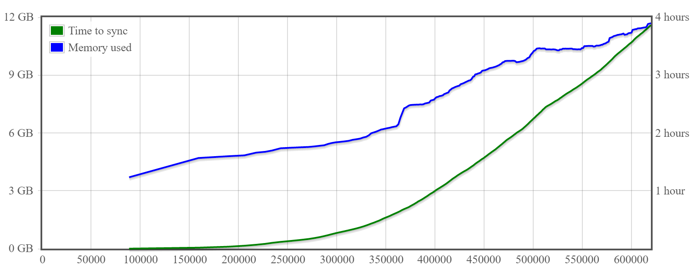
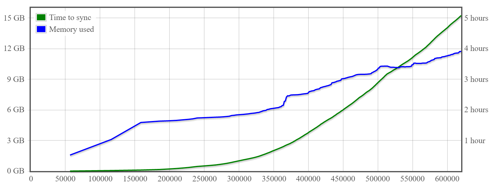
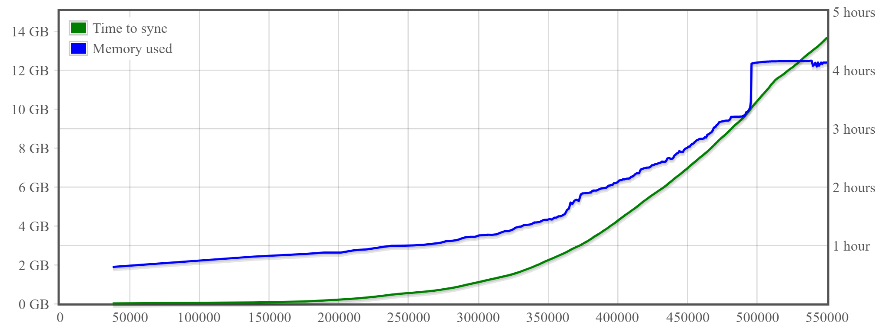
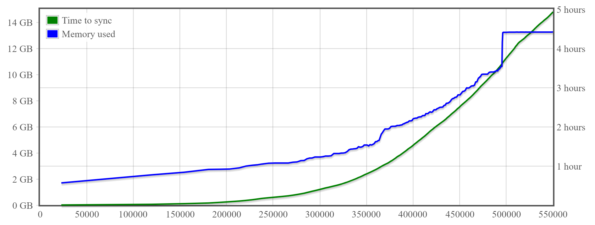

Performance
Charts below present system memory and time needed to sync BTC block chain up to the given block number.
Note: Gocoin uses configurable LastTrustedBlock parameter, to avoid verifying scripts from all blocks known as valid.
Gocoin 1.9.7, built with Go 1.14.1
6 CPUs, 16 GB memory, 320 GB storage from UpCloud

Time needed to re-build UTXO database from blocks stored on the disk2: 2.2 hours
4 vCPUs, 15 GB memory, SSD persistent disk from Google Cloud Platform

Gocoin 1.9.5, built with Go 1.12
32 vCPUs, 32 GB memory, SSD persistent disk from Google Cloud Platform

Time needed to re-build UTXO database from blocks stored on the disk1: 2.4 hours
8 vCPUs, 16 GB memory, Standard persistent disk from Google Cloud Platform

Time needed to re-build UTXO database from blocks stored on the disk1: 3.1 hours
4 vCPUs, 15 GB memory, SSD persistent disk from Google Cloud Platform

Time needed to re-build UTXO database from blocks stored on the disk1: 3.2 hours
4 vCPUs, 15 GB memory, Standard persistent disk from Google Cloud Platform

Time needed to re-build UTXO database from blocks stored on disk1: 3.7 hours
1) Up to block number 550000
2) Up to block number 620000